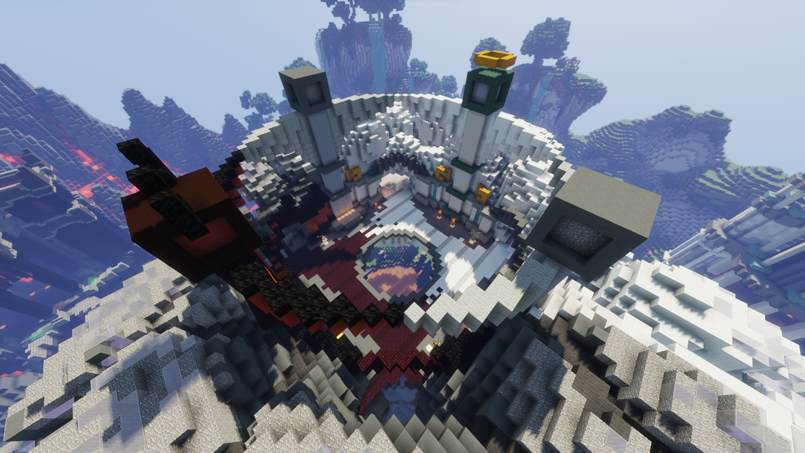
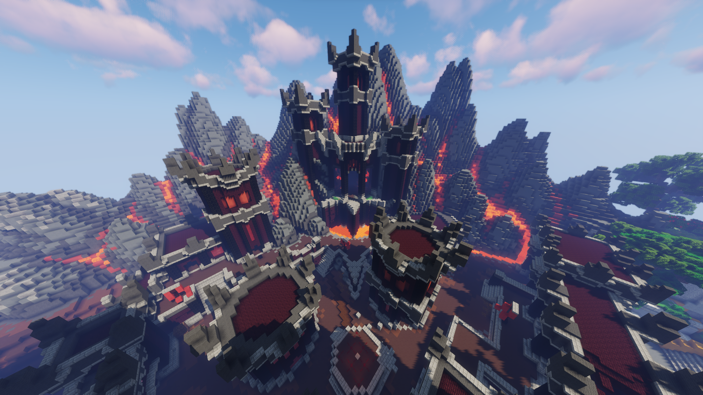
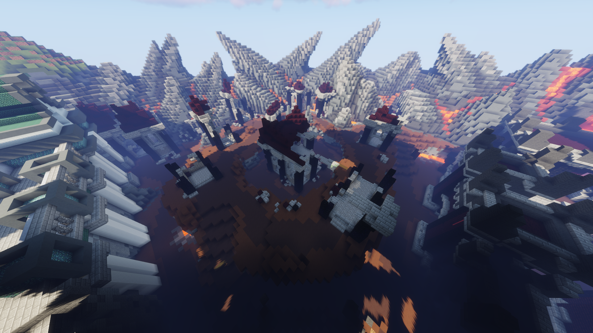
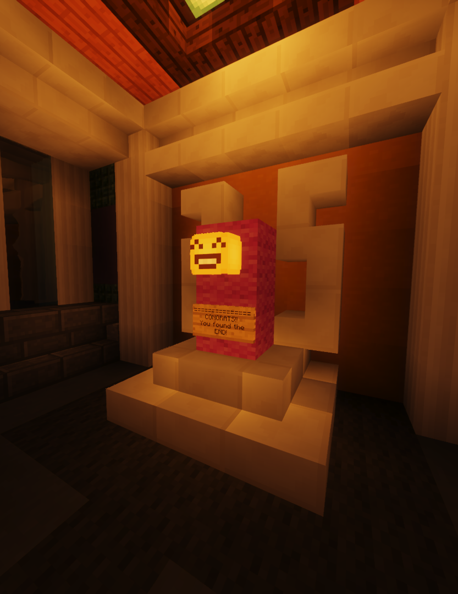
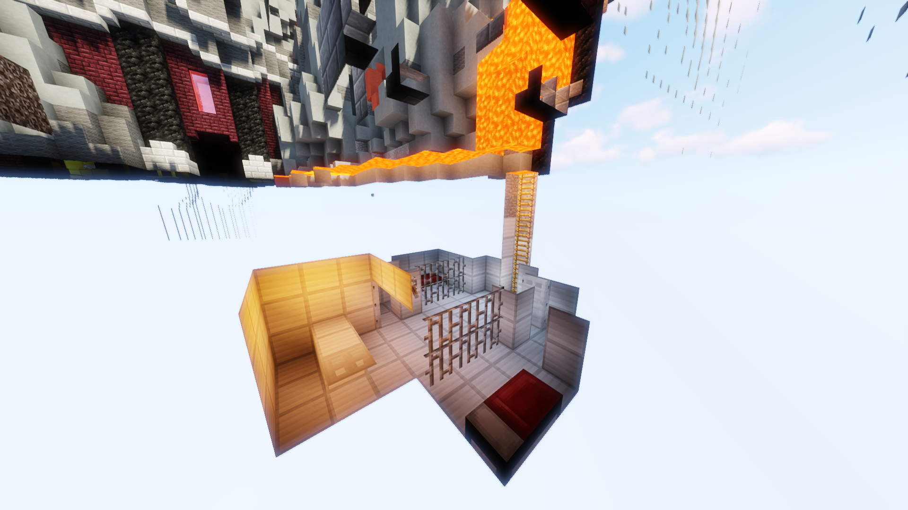

|  |
| A bird's-eye view of the spawn of the Genesis map. |
From the Hypixel Pit Wiki
The Genesis map is a map in the Hypixel Pit. It was the fifth and most map to be released, published on March 6th, 2020 in The Pit 0.4.2. The Genesis map appears after the Abyss map and before the Seasons map in the map rotation.
Unlike all other maps, the Genesis map contains factions, a feature that allows players to join forces with the Angel or the Demon and gain unique perks and rewards.
The map has four quadrants; images of these are shown below.
Palace

Garden

Fortress

Badlands

Additionally, the Genesis map contains three secret areas.
|  |
| An image of the pedestal at the end of the maze. |
The maze in the Genesis map is located at the coordinates (-95, 42, 35), on the first floor of the palace in the Palace quadrant. Upon entering, the player can find a variety of messages inside at its endpoints. The "end" of the maze is located at the coordinates (-45, 24, 7) and requires several turns to reach.
|  |
| A spectator's view of the entrance to the prison. |
Below the lava in the Fortress section of the map at coordinates (99, 45, -4), a prison exists. Inside, there are two cells, each with beds and iron doors. An object that resembles a desk can be seen in the back of the room.
 |
| The hidden entrance to the fishing room. |